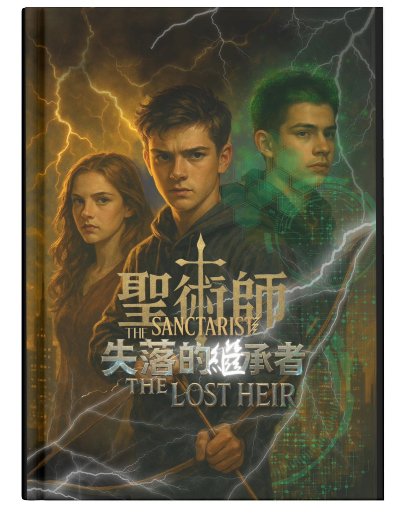
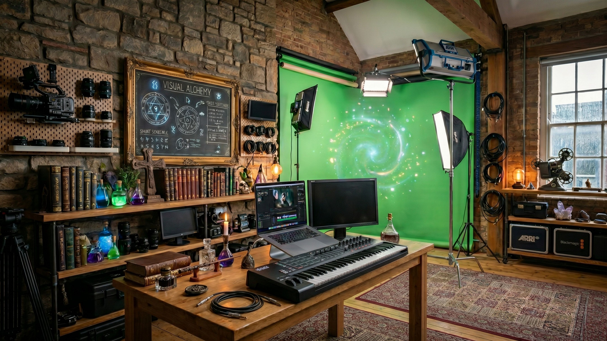
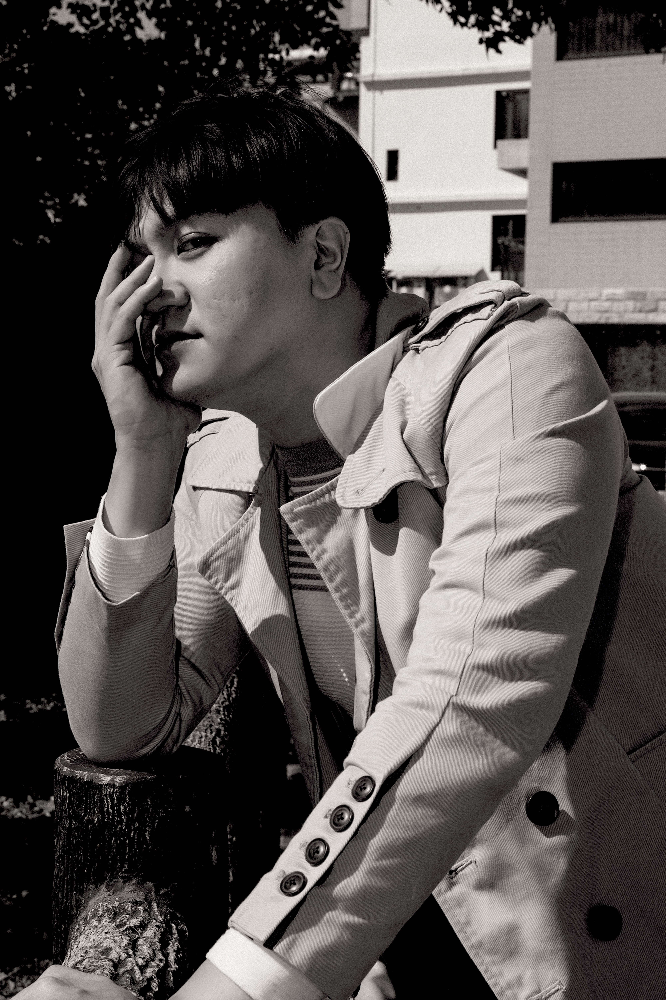
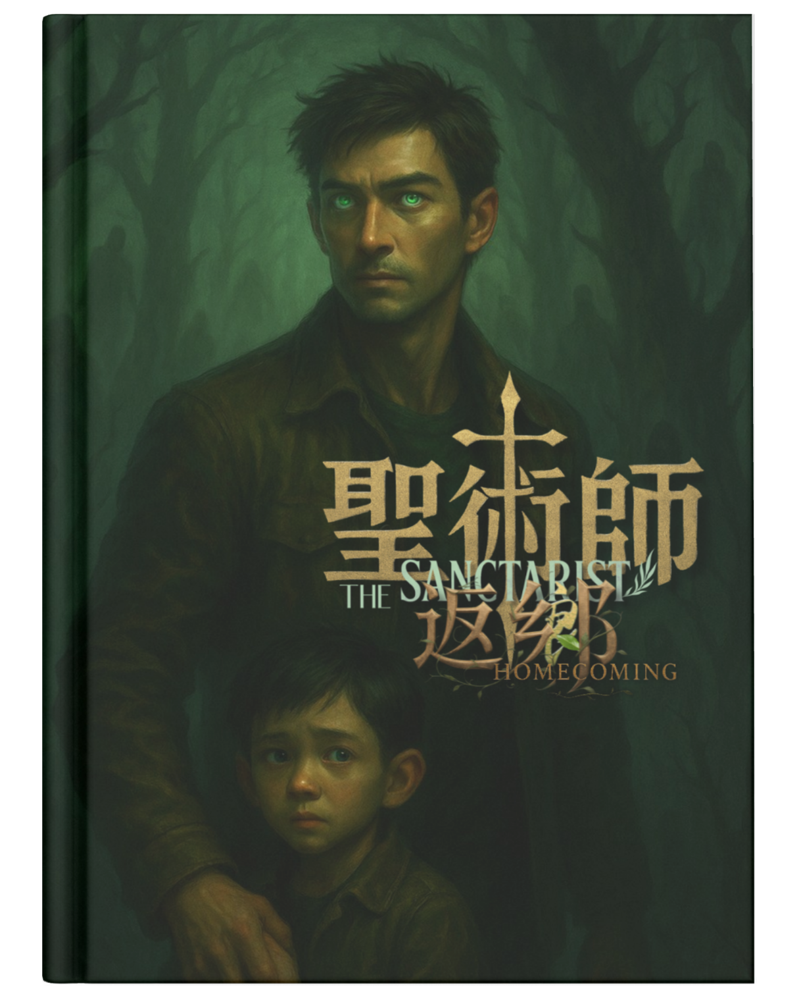
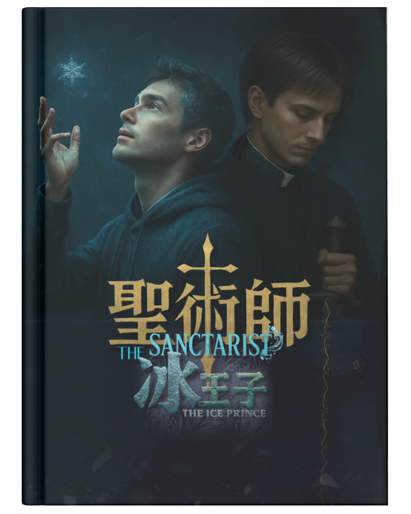
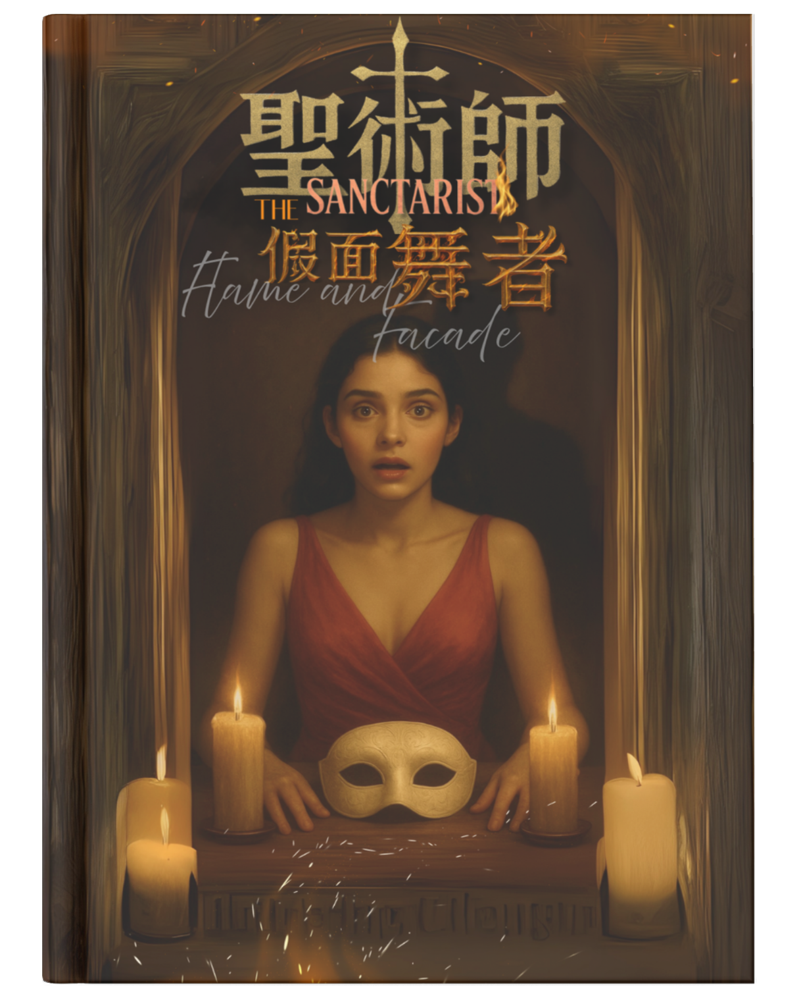
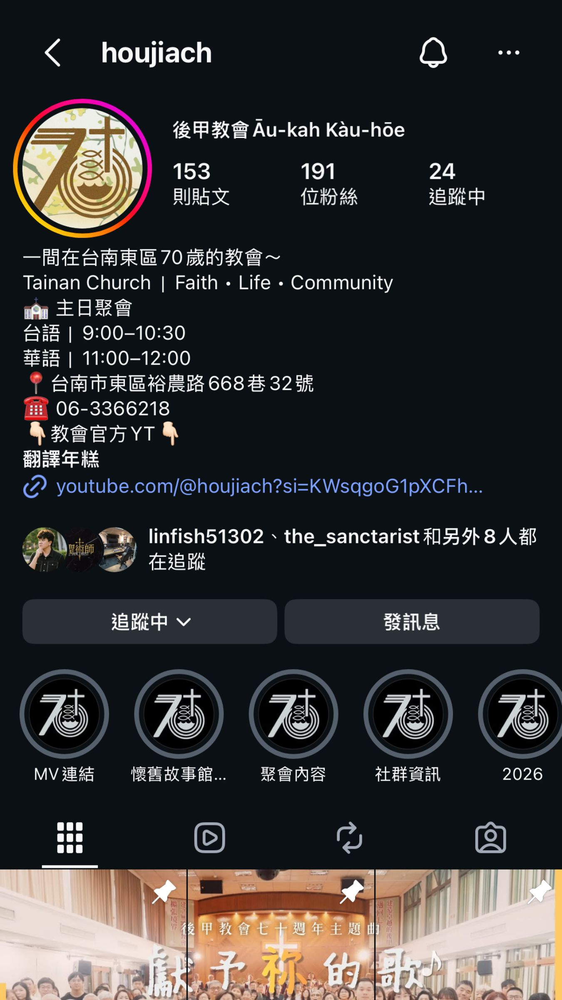
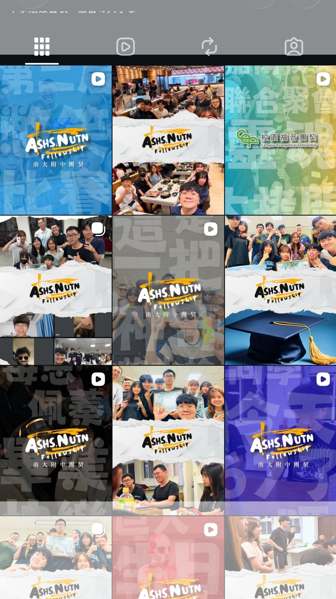

BOOK I
已上線

聖術師：失落的繼承者
THE LOST HEIR
十七歲少年柴克・安德烈發現家中地下室密室的祕密，在惡魔襲擊與信仰試煉中揭開雷翼繼承者的使命。

WHITE MAGIC ART STUDIO
「以『創作』，回應祂的『創造』。」
融合電影敘事、感性配樂與奇幻宇宙，為世界打造療癒心靈的藝術作品。

專案自由導演 ・ 配樂師 ・ 聲音設計師 ・ 活動企劃 ・ 奇幻創作者
擅長以「聽覺」為創作發想原點，將配樂對節奏的掌控融入電影化影像與長篇奇幻敘事，在速食影音時代打造一眼入心、聲色兼具的作品。
「藝術，是上帝賜給我們最溫柔的白魔法。我們攜手全宇宙最強的三大股東，將屬天靈感編織成光影，在冷漠的世界裡施展奇蹟，讓每個看見作品的人，都能遇見神的榮美與愛。」
以信仰、元素聖術與靈魂抉擇交織而成的原創奇幻宇宙。從鹽湖城的雷翼覺醒，到台灣花店的歸鄉與救贖，展開跨越世代的史詩篇章。

THE LOST HEIR
十七歲少年柴克・安德烈發現家中地下室密室的祕密，在惡魔襲擊與信仰試煉中揭開雷翼繼承者的使命。

HOMECOMING
改編自〈浪子回頭〉。三十六歲木之翼單親爸爸梁景皓，為拯救突患怪病的兒子昱鎧，重返逃避已久的家尋求神癒花與救贖。

THE ICE PRINCE
逃離皇室枷鎖的冰霜奇才羅根，遇上渴望卸下天命的水之翼牧師大衛，在阿爾卑斯山風雪試煉中迎向呼召。

FLAME & FACADE
百老匯舞者莎夏失去十二歲前的記憶，在舞台光影與超自然陰影交錯中，揭開身世與靈魂救贖的真相。
以母校身份回到學校服務，運用短影音輕快節奏與電影鏡頭，打造全新校園品牌形象影片。
堅信影像有修補世界的力量，在作品中植入正向生命力，帶來溫暖且具啟發性的視覺體驗。
以感性鏡頭語言與宏大敘事勾勒跨世代的情感共鳴與歷史傳承。
展現花卉自然生命力與光影流動的視覺美學，打造細緻溫柔的品牌影像。
「音樂是我展現魔法的起點。在頻率與節奏的編織中，我捕捉那些微小而深刻的情緒片段。」
與曾敬驊合作
完成馬來西亞微電影《KAWAN》主題曲，以溫暖動人的民謠旋律勾勒深厚情感。
與趙小僑合作
合作完成音樂劇微電影《起司蛋糕》主題曲，以多元管弦樂編曲打造奇幻音律。
與導演李冠賢共同組團
共同創作多首原創音樂作品，推動當代民謠音樂復興與溫暖創作。
「布萊音樂工作室」現已併入白魔法藝術工作室宇宙，珍藏歷年原創聲學創作、LIVE 系列與奇幻風格配樂。
「在快節奏的活動現場，影像的靈魂不在於器材規格，而在於導演的眼界與節奏感。」
學生營會快播快剪作品，全程以手機完成拍攝與剪輯，結合配樂節奏與敘事直覺，留存真實而溫暖的生命回顧。
結合實務影音技能與傳播策略，幫助教會與事工團隊將現場感動延伸為社群影響力。
專為教會與事工同工設計，釐清短影音邏輯、器材準備與內容轉化方向。
透過短影音精華剪輯與動態字幕，讓信息重點更容易被看見與吸收。
把團契互動與歡笑轉化為有溫度的短影音內容，擴大分享觸及。
感謝您的造訪，祝您平安順心。
無論是導演專案諮詢、電影與短片配樂、活動快剪紀錄、教會短影音課程，或是《聖術師》小說出版與影視改編合作，都歡迎來信或來電聯繫。
社群媒體魔法排版與短影音
結合實戰數據分析與溫柔敘事，讓活動紀錄延伸為高觸及 Reels 與具品牌辨識度的社群版面。
三連一式版面設計 & 美學排版
為品牌與教會帳號量身規劃精選分類圖示、風格一致的三連版面與美學排版，建立一致且高質感的視覺印象。


短影音企劃設計與趨勢剪輯
從腳本企劃、現場拍攝到聽覺對點剪輯，掌握前 3 秒留存節奏，將品牌與信仰精神自然融入短影音。
視覺與內容數據化轉化
結合三年網紅電商與社群實戰經驗，讓視覺包裝兼顧審美質感與實際互動成效。